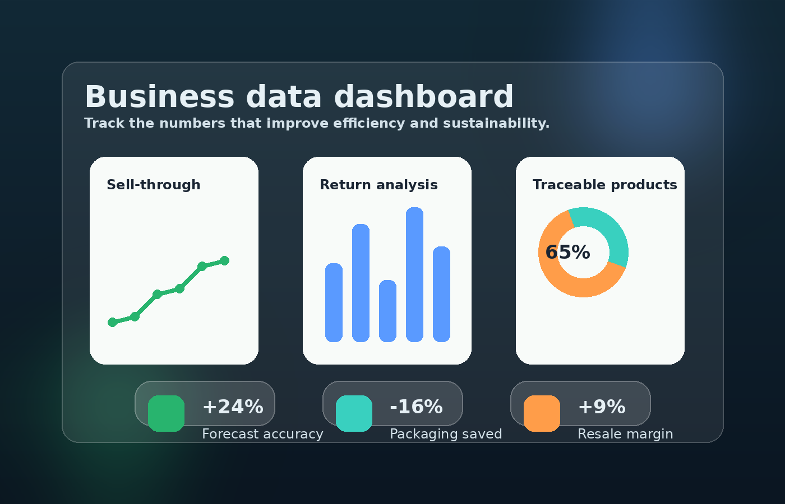

Why business data matters
A retailer cannot improve sustainability by guessing. Managers need clear information on stock, returns, sell-through, supplier transparency, packaging use and customer behaviour. When these measures are organised well, the business can reduce waste and improve decision-making at the same time.

A useful dashboard connects sustainability with commercial outcomes, so the business can see which actions create the strongest results.
| Measure | Why it matters to the business | Why it matters to sustainability |
|---|---|---|
| Forecast accuracy | Improves buying decisions and reduces excess stock. | Prevents unnecessary production and disposal. |
| Sell-through rate | Shows how quickly stock turns into revenue. | Highlights ranges that may create waste and markdowns. |
| Return rate | Identifies where customer dissatisfaction and cost are highest. | Shows where transport, packaging and handling waste can be reduced. |
| Traceable supplier coverage | Supports stronger control over sourcing and compliance. | Improves transparency on materials and ethical responsibility. |
| Repair, resale or take-back uptake | Shows whether circular services create new value. | Keeps products in use longer and reduces disposal pressure. |
Useful analytical habits
- Create one shared dashboard instead of keeping key measures in separate systems.
- Check trends weekly so problems can be addressed before they become expensive.
- Compare environmental indicators with sales and margin data, not in isolation.
- Use the same metrics across teams so buying, marketing and operations work from the same evidence.